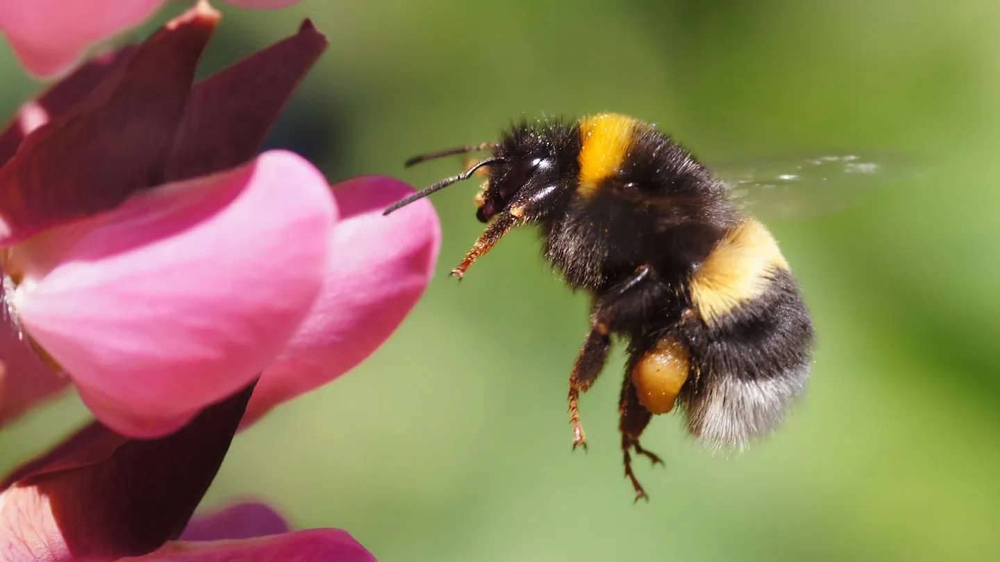
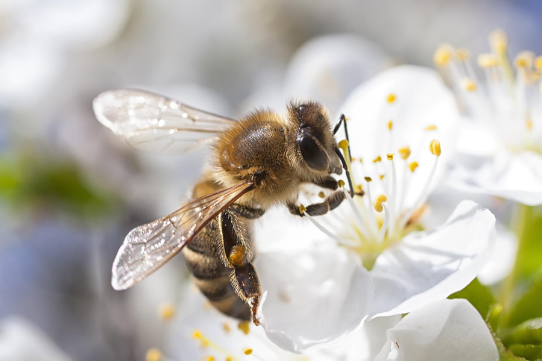
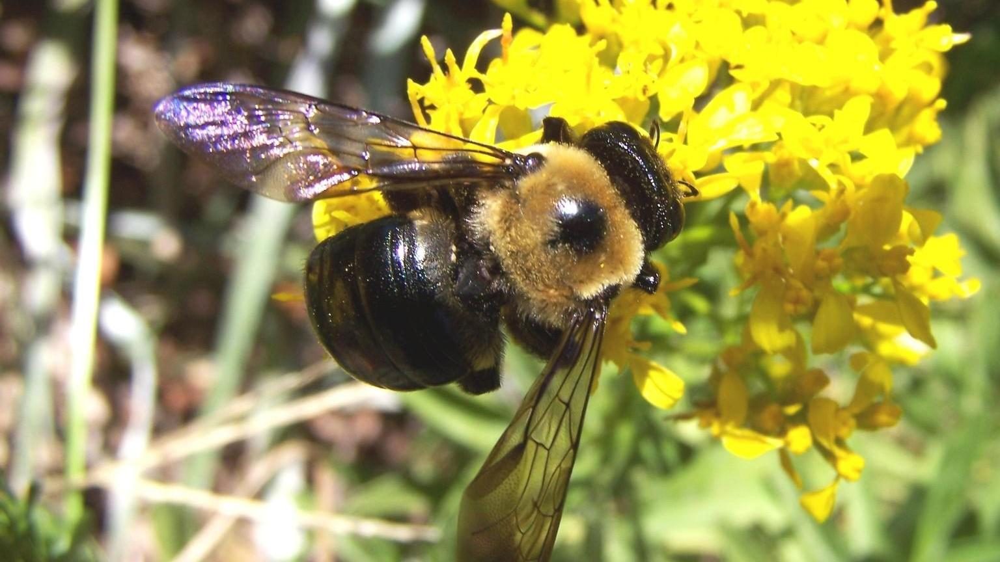
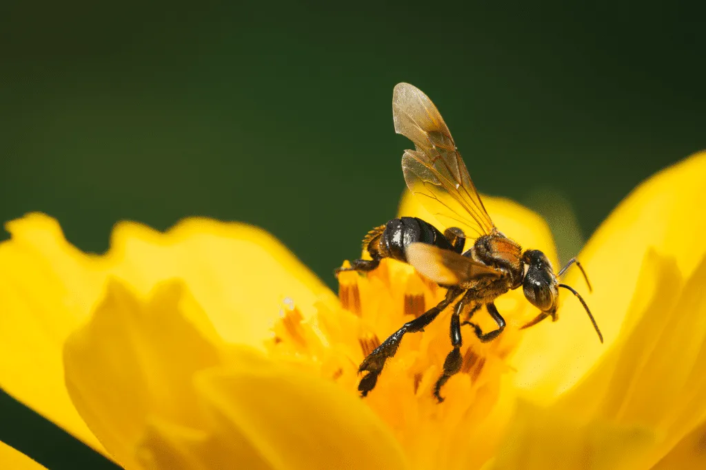

Types of Bees
Bumblebee

Honey Bee

Carpenter Bee

Stingless

Here are 5 basic steps showing how bees collect and make honey:
- Bees visit flowers and use their long tongues to collect nectar.
- They store the nectar in a special stomach called a honey stomach.
- It can hold about 40–70 milligrams of nectar
- That’s roughly half the bee's own body weight
- In size terms, it’s about as small as a tiny grain of rice inside the bee
- Bees fly back to the hive with the nectar.
- They pass the nectar to other bees, who help break it down into honey.
- The honey is stored in honeycomb cells and sealed with wax.
- Honeycomb cells help to save the food for later.
- Honeycomb cells are an efficient way to store the honey.
- Honeycomb cells are stong and stable.
Why do Bees construct honeycomb?
Bees construct honeycombs primarily as a highly efficient storage and
nursery
system essential for the
colony's survival. The wax structures serve as individual cradles for developing larvae, protecting
them
from the elements as they grow from eggs into adult bees. Beyond
acting as a
nursery, the honeycomb is the
primary pantry for the hive; it is used to store both pollen, which provides protein, and honey, the
concentrated nectar that serves as the colony's main energy source during winter months or periods
of nectar
scarcity.
The specific hexagonal shape of the honeycomb cells is a marvel of biological engineering and
resource
management. By using hexagons, bees are able to tile a flat plane
without
leaving any gaps or wasted space,
a mathematical efficiency that uses the least amount of wax to achieve the maximum storage volume.
This
shape also provides immense structural integrity, allowing the delicate wax walls to support many
times
their own weight in honey without collapsing.